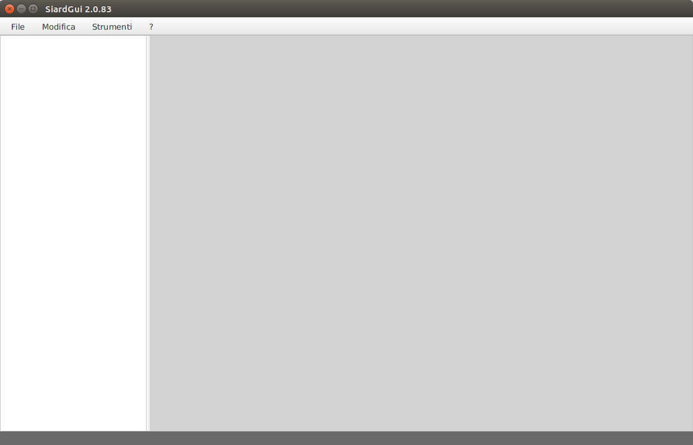
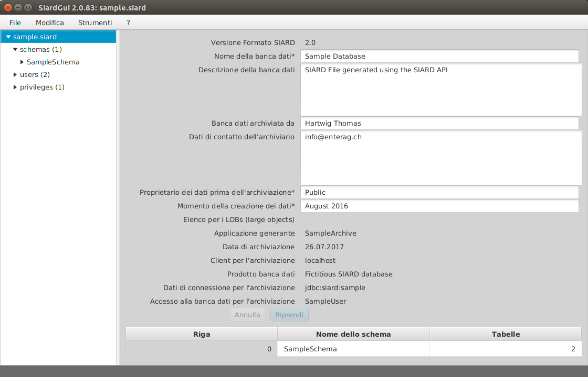
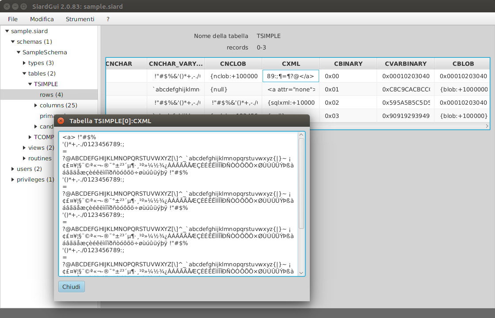
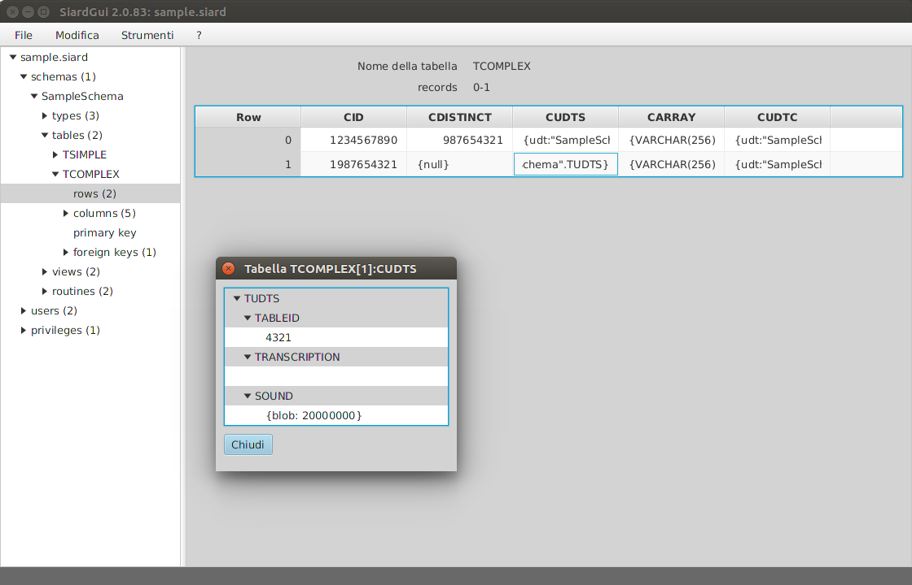

SIARD Suite 2.1 - Avvio di SiardGui
L'applicazione SiardGui comprende un'interfaccia grafico interattivo (GUI - Graphical User Interface). Con l'ausilio di SiardGui è possibile:
- Scaricare una banca dati e salvarla in un archivio SIARD,
- Mostrare, cercare, ordinare, completare e modificare i metadati in un archivio SIARD, fintanto che i dati primari restano invariati,
- Mostrare, cercare e ordinare i dati primari in un archivio SIARD,
- Caricare un archivio SIARD in un'istanza banca dati a scopo di ricerca,
- Scaricare i metadati per un archivio SIARD (senza dati primari), da una banca dati, per dare una prima occhiata al procedimento d'archiviazione,
- Importare una versione campione di metadati di un archivio SIARD con le descrizioni esistenti.
SiardGui è l'applicazione centrale, con la quale i dati vengono elaborati in formato SIARD. I dati primari non possono essere modificati. SiardGui non è adatto per ricerche complesse; a questo scopo si consiglia di caricare l'archivio SIARD in un'istanza banca dati, nella quale si potrà disporre della piena funzionalità delle ricerche SQL.
La conversione di campi di banca dati del tipo TIME oppure TIMESTAMP dipende dal fuso orario locale. Se viene memorizzato l'orario 15:30 in una banca dati a Zurigo, allora verrà salvato l'orario UTC 14:30 (in inverno!) nei metadati dell'archivio SIARD. Se tutti gli orari devono essere interpretati nella banca dati come orari UTC, allora occorre avviare SiardGui con l'opzione
-Duser.timezone=GMT
SiardGui può essere avviato con il nome di un archivio SIARD come unico argomento, che viene aperto subito dopo l'avvio. Ciò consente di impostare siardgui.cmd come applicazione standard per l'apertura di file con l'estensione .siard.
Primo avvio
SIARD Suite è disponibile come pacchetto ZIP da scaricare, decomprimere ed estrarre. Il file SiardGui.jar si trova nella cartella lib del programma. Se JAVA è stato installato correttamente, il programma si avvia, sotto Windows, con un doppio clic sul file JAR. In alternativa si può avviare lo script specifico della piattaforma siardgui.cmd (Windows) oppure siardgui.sh (LINUX).
Nel caso ciò non funzionasse o se si lavora con un altro sistema operativo, SiardGui può anche essere avviato dalla riga di comando nella cartella lib di SIARD Suite come segue:
javaw -jar SiardGui.jar (Windows) java -jar SiardGui.jar (tutti i sistemi operativi)
Ciò è possibile a condizione che la cartella bin della versione JAVA sia stata aggiunta alla variabile PATH. Normalmente ciò è stato già fatto al momento dell'installazione di JAVA, altrimenti occorre scrivere il percorso completo del programma JAVA: (p.es.
"C:\Program Files\Java\jre1.8.0_144\bin\javaw.exe" -jar SiardGui.jarcomprese le virgolette).
Al primo avvio di SiardGui appare un messaggio come questo:

Dato che SiardGui ancora non conosce la lingua dell'utente, quella in cui appare questo messaggio dipende dalla lingua selezionata nel sistema operativo e al momento dell'installazione di JAVA.
Rispondendo con Sì, si ha la possibilità d'indicare una cartella vuota o nuova, nella quale può essere collocata una copia di SIARD. Una volta installata, SiardGui potrà essere avviata dalla cartella scelta oppure tramite un doppio clic sulla nuova icona installata sul desktop.
Indipendentemente da come SiardGui sia stata avviata, sia da una chiavetta USB, da un CD-ROM, oppure se installata sul pc dell'utente, appare sempre la seguente finestra principale.
Finestra principale
La finestra principale è composta dal menu (in alto), dall'albero di navigazione (a sinistra), dal contenuto (a destra) e dalla riga di stato (in basso).
Il bordo che divide l'albero di navigazione e il contenuto, può essere spostato a piacimento, e anche l'estensione dell'intera finestra può essere adattata a piacimento (comunque non può essere inferiore alla grandezza minima). Caricando un file SIARD in SiardGui, la finestra principale appare come segue:
La struttura a sinistra serve a navigare nei metadati, mentre nella sezione a destra, in alto, si possono immettere o modificare i metadati modificabili dell'oggetto banca dati selezionato a sinistra, nell'albero di navigazione.
Riprendi e Annulla
Con il pulsante Riprendi si copiano le modifiche effettuate nei metadati nell'archivio SIARD attualmente aperto. Premendo invece Annulla, tutte le modifiche effettuate dall'ultimo Riprendi, sono annullate.
Tabella dei sotto-oggetti
Nel contenuto viene mostrata una tabella dei sotto-oggetti più importanti sotto i metadati modificabili. Cliccando sul titolo di una colonna, la tabella viene ordinata secondo questa colonna. Se le tabelle, gli schemi e le colonne non hanno un ordine naturale nei metadati, allora SiardGui le visualizzerà di regola in ordine alfabetico. Per questo motivo questa possibilità di ordinare i dati è molto utile cercando di orientarsi in grandi schemi di banca dati.
Tabella con i dati primari
Sotto rows vengono mostrati i dati primari per ogni tabella. Dato che le tabelle possono diventare molto grandi, non è possibile, e neanche utile, caricare e mostrare tutti i record in una volta. Se viene selezionato rows viene invece mostrata una panoramica di 50 record al massimo, distribuiti su tutta la tabella, quindi si può scegliere quale ramo dev'essere mostrato in dettaglio, fino a raggiungere il livello al quale viene mostrato ogni singolo record.
Cliccando sul titolo di una colonna di una view di dati primari, tutta la tabella viene ordinata (in un file XML temporaneo, che viene cancellato chiudendo il programma). Il processo di ordinamento può durare un pò, ma è molto utile per trovare dei singoli record in base a un valore di colonna.
La larghezza della colonna di una view di dati primari, può essere modificata tirando la barra di divisione tra i titoli delle colonne.
La rappresentazione del valore di un cella nella tabella, è utile solo per brevi valori, perciò si può visualizzare una versione più dettagliata del valore facendo un doppio clic sulla cella.

In questo modo viene visualizzato completamente un valore semplice, che può essere copiato negli appunti.
Testi lunghi (p.es. VARCHAR, CLOB o valori XML) vengono visualizzati in editor di testo esterno, che può essere configurato nel menu Strumenti / Opzioni. Sotto Windows l'applicazione editor standard è Notepad.
Valori binari lunghi (p.es. VARBINARY o valori BLOB) vengono visualizzati in editor binario esterno, che può essere configurato nel menu Strumenti / Opzioni. Sotto Windows è preconfigurato il programma freeware HxD, che viene fornito come parte di SIARD.

Se si sa che una colonna BLOB contiene valori di un tipo particolare, come p.es. dati PDF o d'immagine, allora si può configurare un editor binario al posto di un display esadecimale che raffigura bene questo tipo di dati.
Tipi di dati definiti dall'utente (UDTs - user-defined data types) sono mostrati gerarchicamente con i nomi degli attributi in grigio e i valori in bianco.
Ognuno di questi valori può poi a sua volta essere mostrato in dettaglio con un doppio clic.